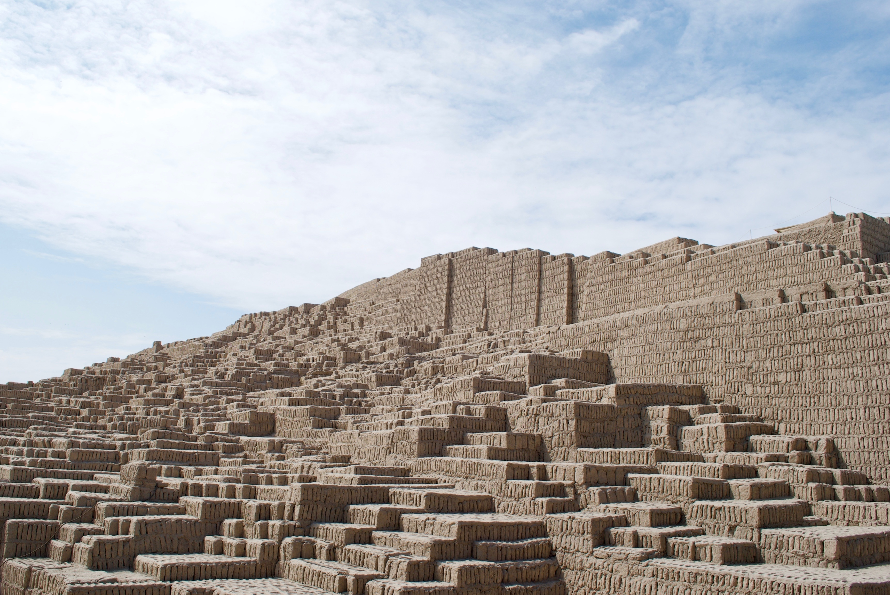

HISTORICAL LIMA
Ancient Lima Experience (Huacas of Lima)
Did you know that the city of Lima has more than 400 archaeological sites? Discover Lima as an ancient city through archaeology, urban landscapes, and living history.